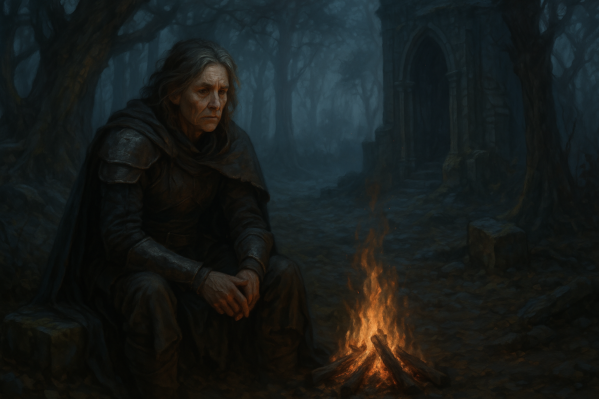

Chapter 5: Feywild Lost
Mattington Shattered


Mattington Shattered
一天 3在妖精荒野
一眨眼，大家都不見了，只留下龍恩獨自一人在偌大的帳篷裡。龍恩也不知道該去哪裡，只好在帳蓬內繞行。
龍恩走到中心樹，用他的兩隻手，試圖再次和樹做連結，卻沒有得到什麼額外的資訊。
突然間，龍恩似乎感受到帳篷外有點動靜。他思索著艾爾比和英荻格過去對於帳篷外的說法，雖然不清楚，但是他知道大家被要求不要到帳篷外。但是除了帳篷外之外，龍恩也沒有別的更好的選擇了。
龍恩探頭到帳篷外，發現明明應該是白天的時間，外頭卻是一片黑暗。從帳篷內取出了火把，龍恩帶著火把在帳篷外遊蕩。外面什麼都沒有，只有泥土地和黑暗，而且火把不久就熄滅了，龍恩也只好再次回到帳篷內。然而，龍恩感受到帳篷外似乎有其他存在，就在他的周圍，但他不知道是什麼存在。
再次從帳篷內走出，龍恩舉著火把，開始繞行帳篷，他感受到帳篷其中一側似乎有被翻動，但他卻看不到任何正在活動的物體，單純看到帳篷被翻了起來後放下去，另他感到非常疑惑。同時，他也聽見了此起彼落的腳步聲，朝著帳篷前進，那感覺和他剛才感受到有別的存在很相似。
龍恩決定走到剛剛看見被翻起的帳篷那側去，一樣翻起帳篷，走了進去。然而，此刻他見到的帳篷內景象已和剛才截然不同。帳篷內是一片黑暗，只有正中央似乎有些亮光。而且，他的正前方，似乎擋了多到快遮蔽住視線的人形生物，他們似乎穿著深黑色的盔甲，直挺挺地站在他面前，背對著他。龍恩聽見了熟悉的叫喊聲，似乎是來自那群他稱呼為夥伴的人們。龍恩試著推開站在他面前的黑色盔甲人們，意外的順利，他便一路竄出人群。
見到了失散已久的夥伴們，龍恩利用短暫的時間，搞清楚在「大家消失」到現在之間發生了什麼事情，接著他便和其他夥伴一起支援救援居民的行動。然而，一聲慘叫吸引了大家的注目。
頭一抬，冒險者們發現一群數量多到難以計算的黑色盔甲士兵已將居民們包圍，躺在最外圍的居民已被士兵攻擊。思索著該如何做，米多莉趕緊衝到居民前，試圖擋下士兵下一波的攻勢。
在薩梅爾和英荻格的評估下，逃離妖精荒野回到原世界是最實際的作法。第一波，英荻格帶著YHWH、法朗茲和龍恩先回到了物質世界。
15050.11.15
多侖維爾寒冷的風讓YHWH、法朗茲和龍恩恢復了意識。前陣子發生了什麼事？總覺得記憶糊糊的。旁邊那名太太又是誰？
身旁的妖精太太有些神秘，要大家叫他「阿嬤」就好，自己是大家的阿嬤。雖然不清楚發生什麼事情，這位名為英荻格的阿嬤雖然欲言又止，但似乎也不打算多做解釋了。四人走入旁邊的酒館，便入內休息。YHWH和英荻格一間，法朗茲和龍恩一間。
大家擔心著其他夥伴們怎麼沒跟著大家一起，英荻格表示再等一陣子，先好好休息吧。
酒館旁原本綁著的勇哥，似乎已經不見了身影。
15050.11.16
龍恩醒來後，發現法朗茲不見了，他便到酒館餐廳吃飯。酒館老闆看見他，便告訴他他的夥伴似乎離開了，而且他表示自己已經冒險夠了，想回家了。對於法朗茲的離開，龍恩也不知該怎麼想，於是便坐了下來好好享用早餐。
不久後，龍恩到鎮上探索，打聽到了現在是15050年，與他印象中上次在這個酒館時的15048年似乎多了兩年。
15050.11.17
英荻格、YHWH和龍恩繼續等待其他夥伴們歸來，卻還是什麼都沒等到。
15050.11.18
在一陣亮光下，薩梅爾知道自己的傳送成功了。但是在他帶著大家離開妖精荒野時，他感受到了一雙手從他身上鬆開。波只留下了一句：對不起，我應該留在這裡繼續奮鬥，便消失在了大家的視線範圍內。然而這痛苦的一幕，只有薩梅爾記得。
回到原世界，喜利・歐喜利和米多莉什麼都不記得了，米多莉只困惑著波怎麼不在他身邊。
三人走到酒館內，與提早回來的冒險者們相遇。想當然而，只有薩梅爾記得他的阿嬤英荻格。眾人在餐廳邊吃東西邊討論下一步，同時英荻格和薩梅爾也嘗試將妖精荒野的事和其他人說明，但這也無法完全讓大家恢復記憶。
疲憊的喜利・歐喜利決定先入住，找個房間睡，龍恩則回到自己的房內打坐。英荻格和YHWH一樣回到雙人房內休息，薩梅爾也找了間房入著，米多莉則決定去一趟麥克嵩，想打聽點消息。
米多莉召喚出一匹馬作為坐騎，快速地奔馳到了麥克嵩。在與衛兵詢問下，無法找到他過去曾去過的津菈教聚會所，同時他也打聽到月先生的辦公室似乎很久沒有人活動了。月先生似乎已經不在這裡了。沒有多少有用的消息，米多莉決定策馬回多侖維爾。
休息足夠後，薩梅爾走出了房間，回到了酒館餐廳。空蕩蕩的餐廳，有個陌生卻又熟悉的人的背影。薩梅爾感到好奇，傾身向前，發現那名中年女子看向他，淚眼汪汪的。那神情，不會錯的，多麽熟悉，卻又好像在一夕之間老了好多好多。
波。
波緊緊抱住薩梅爾，並將這中間發生的事情告訴薩梅爾。
在冒險者們離開妖精荒野後，波和倖存的居民們四處逃竄，帳篷成了入侵者的大本營，而那些身著黑色盔甲的士兵們，正是拉索斯的戰力。拉索斯士兵四出追殺倖存者，倖存者也在荒野之中尋找資源。這段期間，波也練就了不少功夫。然而，最終，波成了唯一的倖存者，妖精荒野就這樣淪陷了，波也只好下了狠心回到原世界了。然而，此時的時間流動又和過去不同，因此波回來時，與薩梅爾傳送的時間，在原世界差不到一天。
在薩梅爾的帶領下，波見到了他許久不見的夥伴龍恩、「爸爸」喜利・歐喜利，「媽媽」米多莉則還沒回來。薩梅爾表示YHWH似乎還在忙，先不要打擾。
「你爸在你離開後到現在都還沒睡過。」
薩梅爾, 論喜利・歐喜利
薩梅爾帶著波在多侖維爾走走，來到了白醫師過去在這裡的住處。簡單探索後，波決定將這房子給拆了。波拿起手上的棍子大力敲打，同時用拳頭努力破壞，但是在薩梅爾眼中，波的行為和小孩打打鬧鬧沒什麼兩樣，因此他透過魔法，助了波一臂之力，將房子給炸了開來。
回到旅店，波和「媽媽」米多莉終於相見，而此時波已年約40，米多莉則還是少女而已。波也盡可能詳盡的和米多莉說明了在妖精荒野到底發生了什麼事。
清楚了妖精荒野現在已不是個選項後，冒險者們的下一步，會是哪裡？
Day 3 in the Feywild
In the blink of an eye, everyone disappeared, leaving only Ron alone in the huge tent. Ron didn't know where to go, so he had to go around the tent.
Ron walked to the center tree and used his two hands to try to connect with the tree again, but did not get any additional information.
Suddenly, Ron seemed to feel some movement outside the tent. He thought about what Elby and Indigo had said about outside the tent in the past. Although it was unclear, he knew that everyone was asked not to go outside the tent. But apart from tents, Ron has no other better choice.
Ron probed outside the tent and found that it was dark outside even though it should be daytime. The torch was taken out of the tent and Ron was wandering outside the tent with the torch. There was nothing outside but dirt and darkness, and the torches soon went out, forcing Ron to return to the tent again. However, Ron felt that there seemed to be other existence outside the tent, right around him, but he did not know what existence it was.
Walking out of the tent again, Ron held a torch and began to walk around the tent. He felt that one side of the tent seemed to be flipped, but he could not see any moving objects. He simply saw the tent being flipped up and then put down, which made him very confused. At the same time, he also heard the sound of footsteps rising and falling, heading towards the tent. The feeling was very similar to the other presence he had just felt.
Ron decided to walk to the side of the tent that he had just seen being flipped up, flipped up the tent as well, and walked in. However, the scene inside the tent he saw at this moment was completely different from before. It was dark inside the tent, except for some light in the center. Moreover, directly in front of him, there seemed to be so many humanoid creatures blocking his vision that they almost obscured his vision. They seemed to be wearing dark black armor, standing straight in front of him, with their backs to him. Ron heard familiar shouts, which seemed to come from the group of people he called companions. Ron tried to push away the people in black armor standing in front of him. Unexpectedly, he ran out of the crowd.
After meeting his long-lost friends, Ron used a short period of time to figure out what happened between "everyone disappeared" and now, and then he and other partners supported the rescue operation of the residents. However, a scream attracted everyone's attention.
Looking up, the adventurers found that a group of black armored soldiers, too numerous to count, had surrounded the residents, and the residents lying on the outermost edge had been attacked by the soldiers. Thinking about what to do, Midori rushed to the residents, trying to block the soldiers' next Beau offensive.
Under the evaluation of Samael and Indigo, escaping the Feywild and returning to the original world is the most practical way. The first Beau, Indigo returned to the material world first with YHWH, Franz and Ron.
15050.11.15
DorrenvilleThe cold wind brought YHWH, Franz and Ron back to consciousness. What happened a while ago? My memory always seems fuzzy. Who is that lady next to me?
The goblin lady next to me is a bit mysterious and wants everyone to call her "grandma". She is everyone's grandma. Although she didn't know what happened, the grandmother named Indigo hesitated to speak, but she didn't seem to want to explain more. The four of them walked into the nearby tavern and went inside to rest. One room for YHWH and Indigo, one room for Franz and Ron.
Everyone was worried about why other friends didn't follow us, Indigo said to wait for a while and have a good rest first.
The Yung that was originally tied next to the tavern seems to have disappeared.
15050.11.16
After Ron woke up, he found that Franz was missing, so he went to the tavern restaurant to eat. The tavern keeper saw him and told him that his companion seemed to have left, and that he had had enough adventures and wanted to go home. Ron didn't know what to think about Franz's departure, so he sat down and enjoyed breakfast.
Soon after, Ron explored the town and learned that it was now 15050, which seemed to be two years longer than the year 15048 he remembered when he was last in this tavern.
15050.11.17
Indigo, YWHW and Ron continued to wait for the other partners to return, but still found nothing.
15050.11.18
In a burst of light, Samael knew that his transmission was successful. But when he led everyone away from the Feywild, he felt a pair of hands loosen from his body. Beau only left one sentence: I'm sorry, I should stay here and continue to fight, and then disappeared from everyone's sight. However, only Samael remembers this painful scene.
Back in the original world, Siri and Midori remember nothing, and Midori is only confused as to why Beau is not by his side.
The three of them walked into the tavern and met the adventurers who had returned early. Of course, only Samael remembers his grandma Indigo. Everyone was eating in the restaurant while discussing the next step. At the same time, Indigo and Samael also tried to explain Feywild's story to others, but this could not completely restore everyone's memory.
The tired Siri decided to check in first and find a room to sleep, while Ron returned to his room to meditate. Indigo returned to the double room to rest like YHWH. Samael also found a room to stay in. Midori decided to go to Macksohn to get some news.
Midori summoned a horse as a mount and quickly galloped to Macksohn. After asking the guards, he could not find the Jinla religious gathering place he had visited in the past. At the same time, he also found out that the office of Mr. Moon seemed to have been empty for a long time. Mr. Moon seems to be no longer here. Without much useful news, Midori decided to ride back to Dorrenville.
After resting enough, Samael walked out of the room and returned to the tavern restaurant. In the empty restaurant, there was a strange but familiar figure from behind. Samael was curious, leaned forward, and found the middle-aged woman looking at him with tears in her eyes. That look was unmistakable, so familiar, yet it seemed like he had aged so much overnight.
Beau.
Beau hugged Samael tightly and told Samael what happened in the meantime.
After the adventurers left the Feywild, Beau and the surviving residents fled in all directions. The tents became the base camp of the invaders, and those soldiers in black armor were the combat power of Lasos. Lasos soldiers went out to hunt down the survivors, and the survivors were also looking for resources in the wilderness. During this period, Beau also developed a lot of skills. However, in the end, Beau became the only survivor, the Feywild fell, and Beau had no choice but to return to the original world. However, the flow of time at this time is different from the past, so when Beau comes back, the time when Samael was transported is less than one day different in the original world.
Under the leadership of Samael, Beau met his long-lost partner Ron and "father" Siri. "Mom" Midori has not come back yet. Samael means that YHWH seems to be still busy, so don’t disturb him yet.
"Your dad hasn't slept since you left."
Samael, On Siri
Samael took Beau for a walk in Dorrenville and came to the residence where Dr. White used to live here. After a brief exploration, Beau decided to demolish the house. Beau picked up the stick in his hand and beat it hard, and tried to destroy it with his fists at the same time. However, in Samael's eyes, Beau's behavior was no different from a child playing around, so he used magic to help Beau blow up the house.
Back at the hotel, Beau and "mother" Midori finally met. At this time, Beau was about 40 years old, and Midori was still a girl. Beau also explained to Midori in as much detail as possible what happened in the Feywild.
Now that it is clear that the Feywild is no longer an option, what will be the next step for the adventurers?